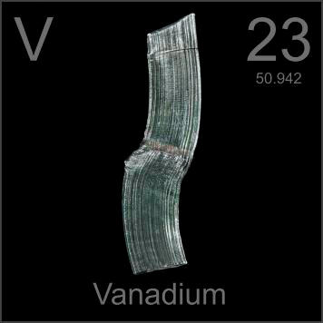

HOME
PREVIOUS
NEXT

Vanadium
Atomic Weight: 50.9415
Density: 6.11 g/cm3
Melting Point: 1910 °C
Boiling Point: 3407 °C
This curl of vanadium was cut from a cylinder on a lathe. A few percent of vanadium in steel creates hard, tough alloys, but the pure metal has few applications. Traces of it give emerald a green color.